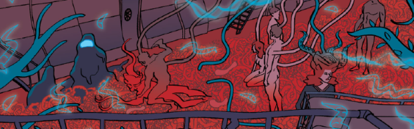

A dark mystery on the edge of space, where humanity ekes out a compressed existence having abandoned a fractured Earth. Are the suicidal cults of the dark recesses in touch with shadow-gods, being manipulated by some unrealised fauna or suffering group psychosis from a cocktail of government-supplied narcotics?
Art by INJ Culbard
| Story Title | Parts | Pages | w indicates a wraparound coverCovers | Year(s) | Issues | Writer | Artist | Colourist | Letterer |
|---|---|---|---|---|---|---|---|---|---|
| Brink | 15 | 75 | 1978: INJ Culbard 1989: INJ Culbard 2 | 2016 | 1978-1992 | Dan Abnett | INJ Culbard | <-- | Simon Bowland |
| Skeleton Life | 18 | 90 | 2030: INJ Culbard 2039: INJ Culbard 2 | 2017 | 2023-2040 | Dan Abnett | INJ Culbard | <-- | Simon Bowland |
| High Society | 19 | 100 | 2106: INJ Culbard 2116: INJ Culbard 2 | 2018-2019 | 2100-2118 | Dan Abnett | INJ Culbard | <-- | Simon Bowland |
| Hate Box | 20 | 101 | 2156: INJ Culbard 2166: INJ Culbard 2 | 2019-2020 | 2150-2169 | Dan Abnett | INJ Culbard | <-- | Simon Bowland |
| Mercury Retrograde | 24 | 126 | 2272: INJ Culbard 2278: INJ Culbard 2284: INJ Culbard 2295: INJ Culbard4 | 2022 | 2270-2279, 2281-2287, 2289-2295 | Dan Abnett | INJ Culbard | <-- | Simon Bowland |
| year | episodes | pages |
| 2002 | 0 | 0 |
| 2003 | 0 | 0 |
| 2004 | 0 | 0 |
| 2005 | 0 | 0 |
| 2006 | 0 | 0 |
| 2007 | 0 | 0 |
| 2008 | 0 | 0 |
| 2009 | 0 | 0 |
| 2010 | 0 | 0 |
| 2011 | 0 | 0 |
| 2012 | 0 | 0 |
| 2013 | 0 | 0 |
| 2014 | 0 | 0 |
| 2015 | 0 | 0 |
| 2016 | 15 | 75 |
| 2017 | 18 | 90 |
| 2018 | 12 | 60 |
| 2019 | 20 | 105 |
| 2020 | 7 | 36 |
| 2021 | 0 | 0 |
| 2022 | 24 | 126 |